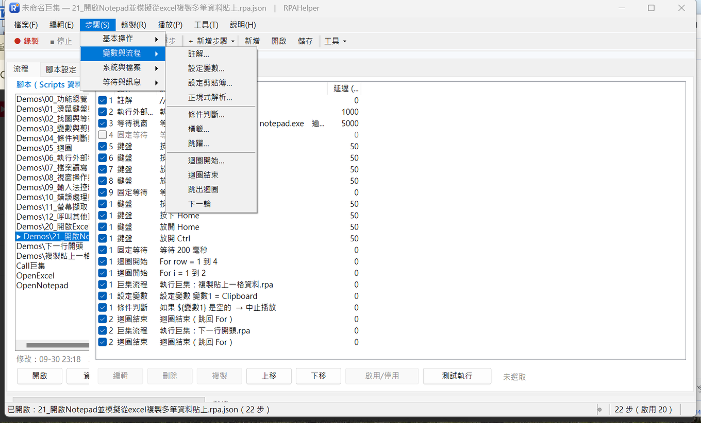

← 回程式設計
← 回影片索引
從照順序重播，
變成會判斷、會重複的流程
變數與流程 11 個動作：變數可以跨腳本共用，條件判斷還能檢查檔案與視窗狀態
2026/10/01・系列 3／5：變數與流程
這一類是「判斷」與「重複」：錄製只能照順序重播，加上這一類的 11 個動作之後，
腳本才有辦法「看情況做事」。共 11 個：註解、設定變數、設定剪貼簿、正規式解析、條件判斷、
標籤、跳躍、迴圈開始／結束、跳出迴圈、下一輪。

「步驟」選單的「變數與流程」分類。示範腳本是 03（變數與剪貼簿）、04（條件判斷與跳躍）、05（迴圈）。
變數：可以跨腳本共用
任何文字欄位都可以用 ${名稱}。變數的來源除了常數，還有剪貼簿、日期時間、游標位置、
前景視窗、隨機數、環境變數、檔案內容⋯⋯所以「讀進來的資料」可以直接餵給後面的步驟。
它可以跨腳本共用。用「加入巨集流程」呼叫另一個腳本時，子腳本用的是同一份變數：
主流程先設好的值，子腳本直接就能用；子腳本自己宣告的初始變數也會併進來，呼叫端要覆寫也可以。
所以同一支子巨集能給很多支主流程重複使用。
修飾詞與預設值（寫在變數名稱後面，用冒號串接，由左到右依序套用）：
${原文:trim} 去頭尾空白；:upper／:lower 轉大小寫；:length 取長度。${價格:int} 轉整數、:float 轉小數、:0.00 數字格式化（也有 #,##0 千分位、日期格式）。${代號|未設定}：變數不存在時使用預設值，而且不會中斷流程；找不到的變數會展開成空字串並在播放紀錄留一行警告。
變數名稱不分大小寫，可含中英文、數字與底線。初始變數可以存在腳本裡（適合把腳本參數化），
命令列再用
--var 月份=9 覆寫；播放期間「變數」分頁會即時顯示每一個變數的值。
設定剪貼簿把變數或文字放進剪貼簿（給那些不吃模擬輸入的程式用）；
正規式解析用正規表示式從變數或文字裡取出資料，可以指定第 N 個群組。
這兩步加上變數，就能把「網頁或報表上的一小段文字」變成後面流程可以判斷的資料。
條件判斷：成立時可以做三件事
條件成立時可以：跳到某個標籤、略過下一步、中止整個播放。
搭配「標籤」與「跳躍」就能組成 if / else；SkipNextWhenTrue 是「成立時跳過下一步」，
也就是 if 的相反寫法。
比較方式不只等於／大於，還有：包含、不包含、開頭是、結尾是、符合正規式、是空的、是數字，
以及很實用的狀態檢查——檔案存在、視窗存在、程序執行中。
所以「等那個程式跑完才繼續」「檔案生出來了才往下做」這種事，不需要寫程式。
一個容易踩的小地方：兩邊都是數字時用數值比較（所以 9 不會被當成比 10 大）；
一邊是文字時用字串比較（不分大小寫）。
迴圈：重複、巢狀、提早結束
迴圈寫在「迴圈開始」與「迴圈結束」之間，可以巢狀。開始那一步要設定起始、結束、遞增，
以及把當下的索引寫進哪個變數——那一步的欄位就是「輪數變數」，之後用
${i} 就能拿到它。
跳出迴圈（Break）提早結束整個迴圈；下一輪（Continue）跳過這一輪剩下的步驟、直接進下一輪。
實務上「遇到某一筆資料格式不對就跳過」就是這兩個動作用起來的。
安全機制：播放設定裡有「單次播放最多執行幾個動作」的上限，會自動攔住寫錯的無限迴圈；
流程跑不完時，先把「重複次數」改成 1，並檢查迴圈範圍。
影片：實際執行錄影，看得到程式自己跑
這支影片示範的是上面哪一段：這支影片示範變數、字串處理、迴圈，還有條件成立的時候程式會跳過哪一段。
| 影片裡看到的步驟 | 說明 |
|---|
| 先存兩個變數：姓名、產品 | 值的內容會直接帶進後面的訊息裡。 |
| 把姓名和產品帶進訊息 | 訊息視窗裡看到的是程式真正代入後的結果。 |
| 用關鍵字把一段文字去空白再轉成大寫 | 關鍵字加在變數名後面就好。 |
| 迴圈從一到四，每輪都把累積值往上加 | 影片裡可以看到每一輪的累積值都不一樣。 |
| 條件成立的時候，程式跳過中間那一段 | 跳過之後會接在標籤後面繼續走。 |
| 把結果寫成一個檔案 | 寫檔之後可以在別的流程再讀回來。 |
這支影片沒有示範的（文章有講、影片沒帶）：- 剪貼簿的讀取與寫入（03 的示範有，這支沒帶）
- 巢狀迴圈（迴圈裡再放迴圈）
- 迴圈的提早結束
看不方便的話，也可以 直接在 YouTube 看。這支是 RPAHelper 的實際執行錄影：畫面上看得到工具視窗和動作清單，程式自己跑完，全程沒有人碰鍵盤滑鼠；程式跳出的訊息視窗也一起入鏡，訊息裡的內容是變數真正代入後的值，工具視窗以外的畫面都已經塗黑。
對應的示範腳本（工具內建）：03 變數與剪貼簿、04 條件判斷與跳躍、05 迴圈。 每支都用註解步驟寫清楚在做什麼，可以開啟來對照本文。但影片裡跑的是另一份：示範副本放在 Scripts\Demo_影片\，內容跟這幾支相同，只是把播放速度調慢一點、每個步驟之間多停一下，方便看清楚程式在做什麼。你要自己試，直接用工具內建的那幾支就可以。
本文是工具實作與流程的記錄，不構成任何軟體或服務的推薦。
頁面上的畫面都是實際操作時擷取，未經合成。